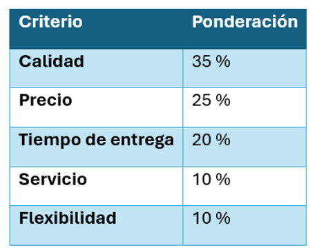

Unidad III · Tema 3.3
Gestión de compras y producción textil
El departamento de compras tiene la función de adquirir los materiales necesarios con las mejores condiciones posibles, mientras que el área de producción transforma coordinadamente la materia prima en bienes de alto valor agregado.
3.5 Gestión de compras
Los criterios de selección de proveedores en la industria textil incluyen:
- Precio.
- Calidad.
- Tiempo de ciclo.
- Confiabilidad.
- Capacidad de abastecimiento.
- Certificaciones.
- Cumplimiento ambiental.
- Responsabilidad social.
Evaluación de proveedores
Una herramienta sencilla y objetiva consiste en asignar ponderaciones porcentuales a cada factor crítico:
| Criterio | Ponderación |
|---|---|
| Calidad | 35 % |
| Precio | 25 % |
| Tiempo de entrega | 20 % |
| Servicio | 10 % |
| Flexibilidad | 10 % |

El proveedor con la mayor calificación será el más conveniente, siempre que cumpla con los requisitos técnicos.
3.6 Producción
Es la transformación de la materia prima en productos terminados. La manufactura textil comprende normalmente las siguientes etapas integradas:
- Apertura y limpieza de fibras.
- Hilatura.
- Tejeduría.
- Tintorería.
- Acabados.
- Corte.
- Confección.
- Empaque.
Comprueba tu comprensión
¿Por qué la calidad (35 %) tiene una ponderación mayor que el precio (25 %) y que el tiempo de entrega (20 %) al seleccionar proveedores de telas e hilos?
Ir a la actividad 3.3Cuando termines los temas de la unidad, aplica lo aprendido en el caso de estudio del negocio "Confecciones ESIT".